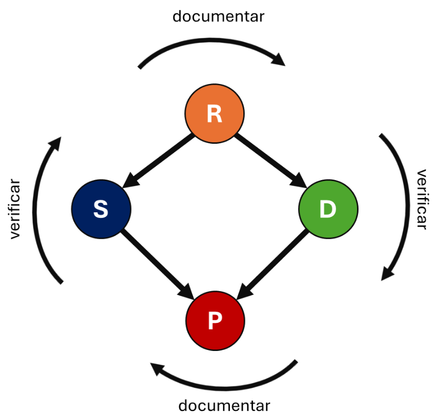

Introducción a la Ingeniería de Requerimientos
Es la rama enfocada en que el desarrollo de software se realice de manera ordenada, sistemática y aplicando la reutilización
¿Por qué se le considera una ingeniería?
Pese a que en muchos casos, los desarrolladores reinventan sus soluciones y tratan a cada proyecto como algo nuevo, se ha buscado usar métodos probados así como elementos ya existentes para evitar empezar desde cero con cada solución
Un requerimiento es una descripción clara y detallada de una necesidad, característica o funcionalidad que un sistema debe cumplir para satisfacer las expectativas de los usuarios y las metas del proyecto. En el contexto del desarrollo de software, los requerimientos sirven como guía para diseñar, implementar y validar soluciones tecnológicas.
Los requerimientos son esenciales porque establecen un entendimiento común entre los stakeholders y el equipo de desarrollo, reduciendo riesgos y garantizando que el producto final cumpla con las expectativas definidas.
El Ingeniero de Software
Un ingeniero de software es aquel encargado de construir el comportamiento y las propiedades del hardware necesarias para su uso específico. Además, de por supuesto, escribir las descripciones necesarias sobre el programa.
- Documenta requerimientos funcionales
- Modela el Sistema con descripciones abstractas
- Verifica que el software cumpla con su diseño
- Divide el desarrollo para trabajo en paralelo
Buenas prácticas
- Definir el alcance, en cuanto a Objetico, límites y restricciones
- Plan general y cronograma con hitos
- Estimación de costos y esfuerzos
- Planificar el entorno de trabajo y el equipo humano
- Identificación de riesgos y recursos
